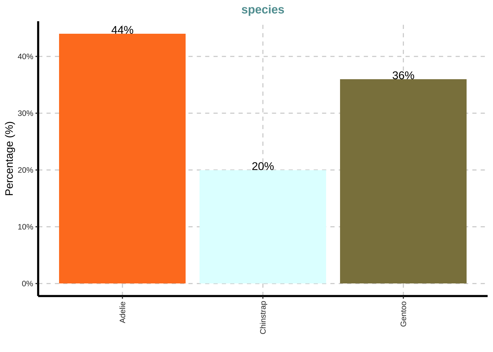
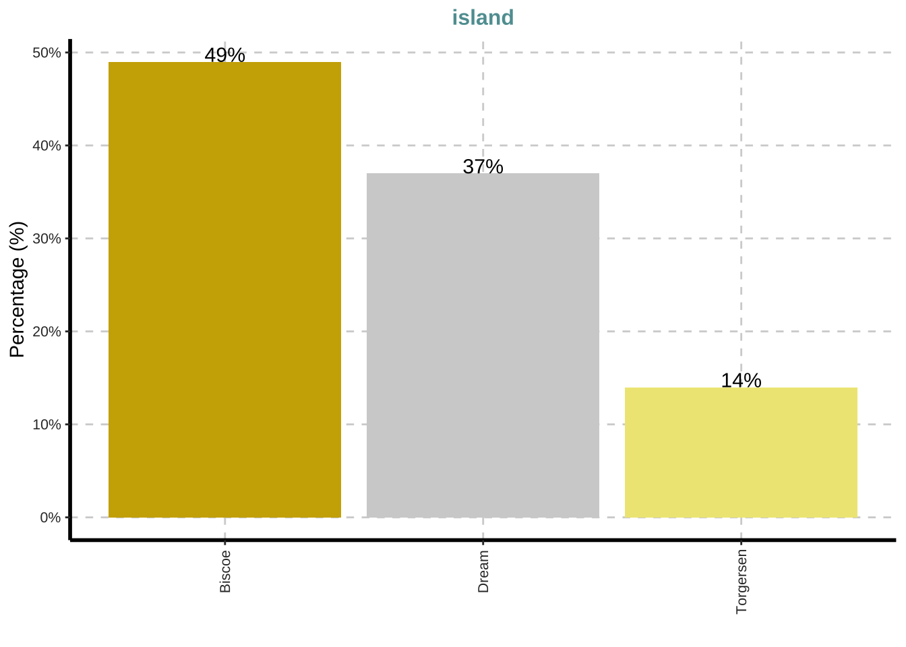

EDA: Análisis exploratorio de los datos
library(tidyverse)
library(rio)
library(DescTools)
library(visdat)
library(knitr)
library(GGally)
library(SmartEDA)
library(inspectdf)
library(gapminder)pin <- import("03_datos/pinguinos.xlsx")head(pin)## species island bill_length_mm bill_depth_mm flipper_length_mm body_mass_g
## 1 Adelie Torgersen 39.1 18.7 181 3750
## 2 Adelie Torgersen 39.5 17.4 186 3800
## 3 Adelie Torgersen 40.3 18.0 195 3250
## 4 Adelie Torgersen NA NA NA NA
## 5 Adelie Torgersen 36.7 19.3 193 3450
## 6 Adelie Torgersen 39.3 20.6 190 3650
## sex
## 1 male
## 2 female
## 3 female
## 4 <NA>
## 5 female
## 6 malepin$species <- factor(pin$species)
pin$island <- factor(pin$island)
pin$sex <- factor(pin$sex)vis_dat(pin)ina <- inspect_na(pin)
ina## # A tibble: 7 x 3
## col_name cnt pcnt
## <chr> <int> <dbl>
## 1 sex 11 3.20
## 2 bill_length_mm 2 0.581
## 3 bill_depth_mm 2 0.581
## 4 flipper_length_mm 2 0.581
## 5 body_mass_g 2 0.581
## 6 species 0 0
## 7 island 0 0show_plot(ina)pin <- na.omit(pin)it <- inspect_types(pin)
it## # A tibble: 2 x 4
## type cnt pcnt col_name
## <chr> <int> <dbl> <named list>
## 1 numeric 4 57.1 <chr [4]>
## 2 factor 3 42.9 <chr [3]>show_plot(it)ExpData(data = pin, type = 1)## Descriptions Value
## 1 Sample size (nrow) 333
## 2 No. of variables (ncol) 7
## 3 No. of numeric/interger variables 4
## 4 No. of factor variables 3
## 5 No. of text variables 0
## 6 No. of logical variables 0
## 7 No. of identifier variables 0
## 8 No. of date variables 0
## 9 No. of zero variance variables (uniform) 0
## 10 %. of variables having complete cases 100% (7)
## 11 %. of variables having >0% and <50% missing cases 0% (0)
## 12 %. of variables having >=50% and <90% missing cases 0% (0)
## 13 %. of variables having >=90% missing cases 0% (0)ExpData(data = pin, type = 2)## Index Variable_Name Variable_Type Per_of_Missing No_of_distinct_values
## 1 1 species factor 0 3
## 2 2 island factor 0 3
## 3 3 bill_length_mm numeric 0 163
## 4 4 bill_depth_mm numeric 0 79
## 5 5 flipper_length_mm numeric 0 54
## 6 6 body_mass_g numeric 0 93
## 7 7 sex factor 0 2ExpNumStat(pin)## Vname Group TN nNeg nZero nPos NegInf PosInf NA_Value
## 2 bill_depth_mm All 333 0 0 333 0 0 0
## 1 bill_length_mm All 333 0 0 333 0 0 0
## 4 body_mass_g All 333 0 0 333 0 0 0
## 3 flipper_length_mm All 333 0 0 333 0 0 0
## Per_of_Missing sum min max mean median SD CV IQR
## 2 0 5715.9 13.1 21.5 17.165 17.3 1.969 0.115 3.1
## 1 0 14649.6 32.1 59.6 43.993 44.5 5.469 0.124 9.1
## 4 0 1400950.0 2700.0 6300.0 4207.057 4050.0 805.216 0.191 1225.0
## 3 0 66922.0 172.0 231.0 200.967 197.0 14.016 0.070 23.0
## Skewness Kurtosis
## 2 -0.149 -0.897
## 1 0.045 -0.888
## 4 0.470 -0.740
## 3 0.359 -0.965ExpNumViz(pin)## [[1]]##
## [[2]]##
## [[3]]##
## [[4]]ExpCatViz(pin)## [[1]]
##
## [[2]]
##
## [[3]]include_graphics("04_ilustraciones/graficos_univariados.png")
ggplot(pin, aes(body_mass_g)) +
geom_histogram(fill = "dodgerblue3", bins = 5)ggplot(pin, aes(body_mass_g)) +
geom_dotplot(fill = "dodgerblue3", dotsize = 0.7)## `stat_bindot()` using `bins = 30`. Pick better value with `binwidth`.ggplot(pin, aes(x = sex, y = body_mass_g)) +
geom_boxplot(fill = "dodgerblue3") +
geom_jitter(width = 0.2)ggplot(pin, aes(x = sex, y = body_mass_g)) +
geom_violin(fill = "dodgerblue3")ggplot(pin, aes(x = sex, y = body_mass_g)) +
geom_violin(fill = "dodgerblue3") +
geom_dotplot(binaxis = "y", stackdir = "center")## `stat_bindot()` using `bins = 30`. Pick better value with `binwidth`.ggplot(pin, aes(species)) +
geom_bar(fill = "dodgerblue3")pin_species <- pin %>%
group_by(species) %>%
summarize(conteo = n())## `summarise()` ungrouping output (override with `.groups` argument)pin_species## # A tibble: 3 x 2
## species conteo
## <fct> <int>
## 1 Adelie 146
## 2 Chinstrap 68
## 3 Gentoo 119ggplot(pin_species, aes(species, conteo)) +
geom_col(fill = "dodgerblue3", width = 0.015) +
geom_point(color = "orange", size = 4) +
geom_text(aes(label = conteo), size = 2.5)ggplot(pin, aes(species, fill = sex)) +
geom_bar()
include_graphics("04_ilustraciones/graficos_bivariados.png")
ggplot(pin, aes(body_mass_g, flipper_length_mm)) +
geom_point() +
stat_smooth(method = "lm")## `geom_smooth()` using formula 'y ~ x'ggpairs(pin, c("bill_length_mm", "bill_depth_mm", "body_mass_g"))data("gapminder")head(gapminder)## # A tibble: 6 x 6
## country continent year lifeExp pop gdpPercap
## <fct> <fct> <int> <dbl> <int> <dbl>
## 1 Afghanistan Asia 1952 28.8 8425333 779.
## 2 Afghanistan Asia 1957 30.3 9240934 821.
## 3 Afghanistan Asia 1962 32.0 10267083 853.
## 4 Afghanistan Asia 1967 34.0 11537966 836.
## 5 Afghanistan Asia 1972 36.1 13079460 740.
## 6 Afghanistan Asia 1977 38.4 14880372 786.gap <- gapminder %>% dplyr::filter(country %in% c("Costa Rica", "Uruguay", "Spain", "France"))head(gap)## # A tibble: 6 x 6
## country continent year lifeExp pop gdpPercap
## <fct> <fct> <int> <dbl> <int> <dbl>
## 1 Costa Rica Americas 1952 57.2 926317 2627.
## 2 Costa Rica Americas 1957 60.0 1112300 2990.
## 3 Costa Rica Americas 1962 62.8 1345187 3461.
## 4 Costa Rica Americas 1967 65.4 1588717 4162.
## 5 Costa Rica Americas 1972 67.8 1834796 5118.
## 6 Costa Rica Americas 1977 70.8 2108457 5927.ggplot(gap, aes(year, gdpPercap, group = country, color = country)) +
geom_point() +
geom_line() +
geom_label(aes(label = round(gdpPercap, 0)), size = 2)LS0tCnRpdGxlOiAiRURBOiBBbsOhbGlzaXMgZXhwbG9yYXRvcmlvIGRlIGxvcyBkYXRvcyIKb3V0cHV0OgogIGh0bWxfZG9jdW1lbnQ6CiAgICB0b2M6IHRydWUKICAgIHRvY19kZXB0aDogNgogICAgdG9jX2Zsb2F0OgogICAgICBjb2xsYXBzZWQ6IGZhbHNlCiAgICBjb2RlX2Rvd25sb2FkOiB0cnVlCi0tLQoKCmBgYHtyfQpsaWJyYXJ5KHRpZHl2ZXJzZSkKbGlicmFyeShyaW8pCmxpYnJhcnkoRGVzY1Rvb2xzKQpsaWJyYXJ5KHZpc2RhdCkKbGlicmFyeShrbml0cikKbGlicmFyeShHR2FsbHkpCmxpYnJhcnkoU21hcnRFREEpCmxpYnJhcnkoaW5zcGVjdGRmKQpsaWJyYXJ5KGdhcG1pbmRlcikKYGBgCgoKYGBge3J9CnBpbiA8LSBpbXBvcnQoIjAzX2RhdG9zL3Bpbmd1aW5vcy54bHN4IikKYGBgCgpgYGB7cn0KaGVhZChwaW4pCmBgYAoKYGBge3J9CnBpbiRzcGVjaWVzIDwtIGZhY3RvcihwaW4kc3BlY2llcykKcGluJGlzbGFuZCA8LSBmYWN0b3IocGluJGlzbGFuZCkKcGluJHNleCA8LSBmYWN0b3IocGluJHNleCkKYGBgCgoKYGBge3J9CnZpc19kYXQocGluKQpgYGAKCmBgYHtyfQppbmEgPC0gaW5zcGVjdF9uYShwaW4pCmluYQpgYGAKCmBgYHtyfQpzaG93X3Bsb3QoaW5hKQpgYGAKCmBgYHtyfQpwaW4gPC0gbmEub21pdChwaW4pCmBgYAoKCmBgYHtyfQppdCA8LSBpbnNwZWN0X3R5cGVzKHBpbikKaXQKYGBgCgpgYGB7cn0Kc2hvd19wbG90KGl0KQpgYGAKCmBgYHtyfQpFeHBEYXRhKGRhdGEgPSBwaW4sIHR5cGUgPSAxKQpgYGAKCmBgYHtyfQpFeHBEYXRhKGRhdGEgPSBwaW4sIHR5cGUgPSAyKQpgYGAKCmBgYHtyfQpFeHBOdW1TdGF0KHBpbikKYGBgCgpgYGB7cn0KRXhwTnVtVml6KHBpbikKYGBgCgpgYGB7cn0KRXhwQ2F0Vml6KHBpbikKYGBgCgpgYGB7cn0KaW5jbHVkZV9ncmFwaGljcygiMDRfaWx1c3RyYWNpb25lcy9ncmFmaWNvc191bml2YXJpYWRvcy5wbmciKQpgYGAKCmBgYHtyfQpnZ3Bsb3QocGluLCBhZXMoYm9keV9tYXNzX2cpKSArCiAgZ2VvbV9oaXN0b2dyYW0oZmlsbCA9ICJkb2RnZXJibHVlMyIsIGJpbnMgPSA1KQpgYGAKCmBgYHtyfQpnZ3Bsb3QocGluLCBhZXMoYm9keV9tYXNzX2cpKSArCiAgZ2VvbV9kb3RwbG90KGZpbGwgPSAiZG9kZ2VyYmx1ZTMiLCBkb3RzaXplID0gMC43KQpgYGAKCmBgYHtyfQpnZ3Bsb3QocGluLCBhZXMoeCA9IHNleCwgeSA9IGJvZHlfbWFzc19nKSkgKwogIGdlb21fYm94cGxvdChmaWxsID0gImRvZGdlcmJsdWUzIikgKwogIGdlb21faml0dGVyKHdpZHRoID0gMC4yKQpgYGAKCmBgYHtyfQpnZ3Bsb3QocGluLCBhZXMoeCA9IHNleCwgeSA9IGJvZHlfbWFzc19nKSkgKwogIGdlb21fdmlvbGluKGZpbGwgPSAiZG9kZ2VyYmx1ZTMiKQpgYGAKCmBgYHtyfQpnZ3Bsb3QocGluLCBhZXMoeCA9IHNleCwgeSA9IGJvZHlfbWFzc19nKSkgKwogIGdlb21fdmlvbGluKGZpbGwgPSAiZG9kZ2VyYmx1ZTMiKSArCiAgZ2VvbV9kb3RwbG90KGJpbmF4aXMgPSAieSIsIHN0YWNrZGlyID0gImNlbnRlciIpCmBgYAoKYGBge3J9CmdncGxvdChwaW4sIGFlcyhzcGVjaWVzKSkgKwogIGdlb21fYmFyKGZpbGwgPSAiZG9kZ2VyYmx1ZTMiKQpgYGAKCmBgYHtyfQpwaW5fc3BlY2llcyA8LSBwaW4gJT4lCiAgZ3JvdXBfYnkoc3BlY2llcykgJT4lCiAgc3VtbWFyaXplKGNvbnRlbyA9IG4oKSkKYGBgCmBgYHtyfQpwaW5fc3BlY2llcwpgYGAKCmBgYHtyfQpnZ3Bsb3QocGluX3NwZWNpZXMsIGFlcyhzcGVjaWVzLCBjb250ZW8pKSArCiAgZ2VvbV9jb2woZmlsbCA9ICJkb2RnZXJibHVlMyIsIHdpZHRoID0gMC4wMTUpICsKICBnZW9tX3BvaW50KGNvbG9yID0gIm9yYW5nZSIsIHNpemUgPSA0KSArCiAgZ2VvbV90ZXh0KGFlcyhsYWJlbCA9IGNvbnRlbyksIHNpemUgPSAyLjUpCmBgYAoKYGBge3J9CmdncGxvdChwaW4sIGFlcyhzcGVjaWVzLCBmaWxsID0gc2V4KSkgKwogIGdlb21fYmFyKCkKYGBgCgoKYGBge3J9CmluY2x1ZGVfZ3JhcGhpY3MoIjA0X2lsdXN0cmFjaW9uZXMvZ3JhZmljb3NfYml2YXJpYWRvcy5wbmciKQpgYGAKCgpgYGB7cn0KZ2dwbG90KHBpbiwgYWVzKGJvZHlfbWFzc19nLCBmbGlwcGVyX2xlbmd0aF9tbSkpICsKICBnZW9tX3BvaW50KCkgKwogIHN0YXRfc21vb3RoKG1ldGhvZCA9ICJsbSIpCmBgYAoKYGBge3J9CmdncGFpcnMocGluLCBjKCJiaWxsX2xlbmd0aF9tbSIsICJiaWxsX2RlcHRoX21tIiwgImJvZHlfbWFzc19nIikpCmBgYAoKYGBge3J9CmRhdGEoImdhcG1pbmRlciIpCmBgYAoKYGBge3J9CmhlYWQoZ2FwbWluZGVyKQpgYGAKCgpgYGB7cn0KZ2FwIDwtIGdhcG1pbmRlciAlPiUgZHBseXI6OmZpbHRlcihjb3VudHJ5ICVpbiUgYygiQ29zdGEgUmljYSIsICJVcnVndWF5IiwgIlNwYWluIiwgIkZyYW5jZSIpKQpgYGAKCmBgYHtyfQpoZWFkKGdhcCkKYGBgCgoKYGBge3J9CmdncGxvdChnYXAsIGFlcyh5ZWFyLCBnZHBQZXJjYXAsIGdyb3VwID0gY291bnRyeSwgY29sb3IgPSBjb3VudHJ5KSkgKwogIGdlb21fcG9pbnQoKSArCiAgZ2VvbV9saW5lKCkgKwogIGdlb21fbGFiZWwoYWVzKGxhYmVsID0gcm91bmQoZ2RwUGVyY2FwLCAwKSksIHNpemUgPSAyKQpgYGAKCgoK